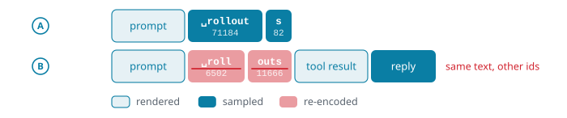
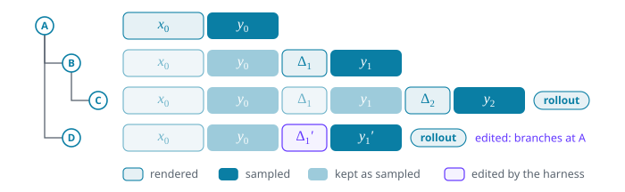
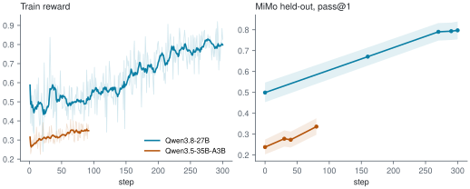

Harnesses speak text. RL trains on sampled tokens. tokin is a gateway that makes any agent harness token-native: sitting between the harness and the inference engine, it ensures the model trains on exactly the tokens it sampled. It handles each rollout in a tree that grows with every request and records every harness event; every prefix in the tree stays token-in, token-out (TITO), so a request that continues from any earlier turn still builds on exactly what was sampled. With tokin and slime, we train Qwen3.8-27B and Qwen3.5-35B-A3B on MiMo-V2.6-RL with the pi coding agent kept as is, improving held-out MiMo pass@1 by +xx and +xx points and Terminal-Bench 2.1 by +xx and +xx points, respectively.

Harnesses speak text
A common framing today is Agent = Model + Harness. Harnesses such as Claude Code, Codex, pi, opencode and Terminus, simple or elaborate, define the interaction loop: when to send the conversation so far to the model, and how to act on its reply.
A harness, though, speaks text, and RL trains on tokens. Connect a harness straight to the inference engine and every turn makes a round trip: the model samples token ids $y$, the server decodes and parses them into a text message, the harness acts on it, and its next request sends back the whole conversation, which the server renders through the chat template and encodes again. Nothing makes this round trip return the ids the model sampled (Figure 2), and the chat template may further drop past reasoning or re-serialise tool calls. Wherever an id changes, the trainer updates a token the policy never sampled, a harm illustrated repeatedly [1, 2, 3].

␣rollout·s as ␣roll·outs: the same text, other ids.A gateway with two properties
tokin solves this for any harness.1Note 1Its predecessor strands-sglang [2] solves it inside one agent framework and while the history only grows; Appendix A compares them. It is a gateway between harnesses and the inference engine (Figure 1), and it guarantees two properties. For the request at turn $t$, counted below, write $h_t$ for the history the harness sends, a list of messages; $x_t$ for the prompt ids tokin sends the engine; $y_t$ for the token ids the model samples back; and $a_t$ for the assistant message tokin parses from them. Juxtaposition concatenates sequences, ids and messages alike, e.g., $x_t\, y_t$ is $x_t$ followed by $y_t$.
Property 1 (messages only) A harness sees only messages ($h_t$, $a_t$); the token ids stay between tokin and the engine:
$$\text{harness} \xrightarrow{\;h_t\;} \text{tokin} \xrightarrow{\;x_t\;} \text{engine} \xrightarrow{\;y_t\;} \text{tokin} \xrightarrow{\;a_t\;} \text{harness} \xrightarrow{\;h_{t+1}\;} \cdots$$A harness thus needs only a new base URL, and tokin recovers all token state from the history. A request continues an earlier one if its history extends that request’s history and reply by a non-empty observation, such as tool results, and that reply was not cut at the length limit. Such a request also continues every ancestor of that one, so tokin attaches it to the deepest it continues, the latest on a tie, or makes it a root if there is none. Usually the parent is the latest request, but a retry or an edit to history attaches to an earlier one, so the requests of a session form a tree (Figure 3). Each path from a root to a leaf is one trajectory, and $t$ counts turns within it:
$$h_t = h_{t-1}\, a_{t-1}\, o_t, \qquad h_0 = o_0.$$
Property 2 (TITO at every prefix) Along every trajectory, the ids extend as the messages do:
$$x_t = x_{t-1}\, y_{t-1}\, \Delta_t, \qquad x_0 = \Delta_0,$$where $\Delta_t$ encodes only $o_t$, as the chat template renders it after $a_{t-1}$ (with the tools at $t = 0$), and the opening of the next assistant turn. Hence $x_t$ begins with $x_s\, y_s$ for every $s < t$.
The property holds by construction: tokin stores each turn’s $\Delta_t$ and $y_t$ and sends $x_t$ as the stored ids of turns $0$ to $t-1$ followed by $\Delta_t$, so the only ids it ever encodes are each turn’s $\Delta_t$. A trajectory ending at turn $T$ is the rollout $x_T\, y_T$: every $y$ in it exactly as sampled and every $\Delta$ masked from the loss.
Inside the gateway
Figure 1 follows one request through tokin. The trainer opens a session per sample with POST /sessions and hands the harness its base URL, /sessions/{id}/v1; from there the harness is an ordinary OpenAI client. For every request, tokin:
- attaches it to its parent in the session, turn $t-1$ of its trajectory;
- renders only the observation $o_t$, encodes it as $\Delta_t$, and sends $x_t = x_{t-1}\, y_{t-1}\, \Delta_t$;
- generates on the engine from token ids to token ids, keeping what the trainer needs per position: logprobs, the sampler’s top-p support, the experts each token was routed to, the weight version that sampled it;
- parses $y_t$ into the assistant message $a_t$, with its reasoning and tool calls, for the harness.
Take the session of Figure 3. The harness first sends the task, $o_0$. Nothing precedes it, so request A is a root: tokin renders $o_0$ with the tools into $x_0 = \Delta_0$, the engine samples $y_0$, say a tool call, and the harness gets it back as $a_0$. The harness runs the tool and sends $h_1 = o_0\, a_0\, o_1$. Request B continues A, so tokin encodes only the tool result $o_1$ and sends $x_1 = x_0\, y_0\, \Delta_1$: the ids of $a_0$ are $y_0$ as sampled, not $a_0$ encoded again. Request C continues B the same way. Request D resends the conversation with $o_1$ rewritten as $o_1'$; it continues A but not B, so it branches at A and sends $x_1' = x_0\, y_0\, \Delta_1'$. A compaction, which most harnesses do (Claude Code, Codex, opencode, pi), replaces the history with a summary and starts a new root.

When the harness finishes, the trainer collects the session with GET /sessions/{id}, one safetensors payload that stores each turn once, however many rollouts share it. Here it holds two rollouts, C and D, sharing $x_0\, y_0$. Each rollout gives token_ids ($x_T\, y_T$), a loss_mask that is 1 on every $y$ and 0 on every $\Delta$, aligned logprobs, and what step 3 kept, when the trainer asked for it: the top-p support, the routed experts, the weight version of each sampled span.
Training the pi coding agent with tokin
We train the pi coding agent, kept as is, on the code tasks of MiMo-V2.6-RL-oss, holding out 256 for validation,2Note 2Each task is a Harbor task run in an e2b sandbox; the held-out tasks are listed in heldout.txt. with slime in fully asynchronous mode as the trainer; examples/pi_mimo_rl has the recipe to reproduce it. Each sample is one pi trial on its own tokin session, rewarded by the task’s verifier. Since a session is a tree, it can yield several rollouts, one per leaf, as after a compaction; they share the session’s one reward and count once in the group-mean advantage [5], and where they share a prefix, its sampled tokens are trained only once: their loss mask is 1 in one rollout and 0 in the others.3 The objective is REINFORCE [4] with score centering [8], dynamic sampling [6] and truncated importance sampling [7]. We train a dense model, Qwen3.8-27B, and an MoE model, Qwen3.5-35B-A3B, which also replays the sampler’s expert routing in training (R3) [9]; Table 1 gives their settings.
| Qwen3.8-27B | Qwen3.5-35B-A3B | |
|---|---|---|
| reasoning | medium effort | thinking |
| batch per step | 8 tasks × 8 trials | 64 tasks × 16 trials |
| tokens per turn | 8,192 | 8,192 |
| steps | 300 | 200 |
Table 1. Training settings of the two models; the rest of the recipe is shared and in examples/pi_mimo_rl. A trial is one pi run on one task; tokens per turn caps each generation.
The train reward, the mean reward of each step’s trials before dynamic sampling, rises for both models (Figure 4, left): from about 0.5 to 0.8 over Qwen3.8-27B’s 300 steps, and from about 0.27 to 0.35 over Qwen3.5-35B-A3B’s first 90. Held-out MiMo pass@1, evaluated every 60 steps and every 10 over the last 30, rises with it, from 0.50 to 0.80 for the 27B model.

The 256 held-out MiMo tasks also pick the checkpoint, the one with the best pass@1; Terminal-Bench 2.1 (89 tasks) then tests it once, 8 samples per task against MiMo’s 4, with pi as the harness and a per-turn limit of 32,768 tokens (Table 2).4Note 4Training caps a turn at 8,192 tokens to keep rollouts fast; evaluation allows 32,768 so the model’s reasoning is not cut short. A separate experiment finds that TITO has no significant effect on a frozen model’s scores (Appendix B).
| pass@1 | MiMo held-out | Terminal-Bench 2.1 |
|---|---|---|
| Qwen3.8-27B | 0.499 → xx (+xx) | 0.593 → xx (+xx) |
| Qwen3.5-35B-A3B | 0.238 → xx (+xx) | 0.368 → xx (+xx) |
Table 2. pass@1 of the base model and of the checkpoint held-out MiMo selects, with the gain in points.
tokin’s release
We release tokin v0.1.0, a beta, which keeps a harness on the API it already speaks and every prefix of its rollouts exactly as sampled. A modern agentic RL recipe shows it at work: pi, kept as is, trained on MiMo, improves on held-out MiMo and on Terminal-Bench 2.1 at two model scales (Table 2).
tokin has run more than pi. examples/harbor_eval evaluates mini-swe-agent, opencode and pi through it on Terminal-Bench 2.1 and SWE-bench Verified. It covers the chat templates of Qwen2.5, Qwen3.5 and 3.6, Qwen3.8, and GLM-4.5 through GLM-5.3, serves OpenAI’s chat completions, and generates on SGLang. Next are the APIs other harnesses speak, such as OpenAI’s Responses API for Codex and Anthropic’s Messages API for Claude Code; each only translates its requests and replies, and the rollout management behind them stays as it is.
Community feedback is highly appreciated, and contributions are welcome, from a model family or a tool-call grammar to a harness API or a practical example. If you are interested, open an issue or a pull request on open-rollout/tokin.
References
- [1] The Agent Lightning (AGL) Team. No More Retokenization Drift: Returning Token IDs via the OpenAI Compatible API Matters in Agent RL. vLLM blog, 2025.
- [2] Yuan He and Chengxing Xie. Strands-SGLang: Bridging Agent Scaffolding and RL Training. yuanhe.wiki, 2026.
- [3] Quentin Gallouédec and Kashif Rasul. Agentic RL: Token-In, Token-Out Done Right. Hugging Face blog, 2026.
- [4] Ronald J. Williams. Simple Statistical Gradient-Following Algorithms for Connectionist Reinforcement Learning. Machine Learning, 1992.
- [5] Zhihong Shao et al. DeepSeekMath: Pushing the Limits of Mathematical Reasoning in Open Language Models. arXiv:2402.03300, 2024.
- [6] Qiying Yu et al. DAPO: An Open-Source LLM Reinforcement Learning System at Scale. arXiv:2503.14476, 2025.
- [7] Feng Yao et al. On the Rollout-Training Mismatch in Modern RL Systems. NeurIPS 2025 Workshop on Efficient Reasoning (OpenReview); blog version: Your Efficient RL Framework Secretly Brings You Off-Policy RL Training (blog), 2025.
- [8] Martin Marek and Max Ryabinin. Score Centering Stabilizes Off-policy Reinforcement Learning. arXiv:2609.20807, 2026.
- [9] Wenhan Ma et al. Stabilizing MoE Reinforcement Learning by Aligning Training and Inference Routers. arXiv:2510.11370, 2025.
Appendix
A. tokin vs strands-sglang
tokin grows out of strands-sglang [2], an early open-source TITO implementation: a model provider for Strands Agents that calls SGLang’s native /generate and keeps the rollout’s ids as it goes. tokin lifts two of its limits:
- One framework. strands-sglang is a model class inside Strands Agents, so only an agent built on it gets TITO. tokin is a server that speaks chat completions, so any harness does (Property 1).
- One growing list. strands-sglang keeps one flat list of ids per episode and extends it with the messages past a count of those already seen. It assumes the history only grows: it does not check earlier messages against what it served, and a trimmed history needs
reset(), which closes the rollout. tokin matches each history against what it served and keeps a tree, so a retry, an edit or a compaction keeps every sampled id before it (Property 2).
tokin also states each chat template family’s increment explicitly and checks it against the real tokenizer, where strands-sglang derives an increment by rendering behind a placeholder prefix and cutting the prefix off.
B. tokin has no measurable effect on evaluation
With tokin, later turns see the sampled ids rather than their re-encoding. To check whether that changes evaluation with the policy frozen, Qwen3.6-35B-A3B ran with mini-swe-agent, opencode and pi on Terminal-Bench 2.1 (89 tasks × 4 samples) and SWE-bench Verified (500 tasks × 1 sample), once through tokin and once through the same gateway re-rendering every turn from text. Over the 2,568 paired samples, pass@1 differs by −0.002 (95% CI [−0.018, +0.015]).
Discussion